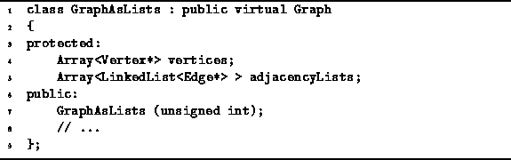

Data Structures and Algorithms
with Object-Oriented Design Patterns in C++
Data Structures and Algorithms
with Object-Oriented Design Patterns in C++
Program  declares the GraphAsLists concrete class.
The GraphAsLists class is derived from
the abstract base class Graph.
The GraphAsLists class represents the edges
of a graph using adjacency lists.
declares the GraphAsLists concrete class.
The GraphAsLists class is derived from
the abstract base class Graph.
The GraphAsLists class represents the edges
of a graph using adjacency lists.

Program: GraphAsLists Class Definition
Two member variables are declared--vertices and adjacencyLists.
The former is an array of pointers to Vertex instances.
This array is used to represent the elements of the vertex set  .
.
The second member variable is an array of linked lists of pointers to edges.
The  linked list, adjacencyLists[i],
represents the set
linked list, adjacencyLists[i],
represents the set  which is
the set of edges emanating from vertex
which is
the set of edges emanating from vertex  .
The implementation uses the LinkedList<T> class
given in Section .
.
The implementation uses the LinkedList<T> class
given in Section .
The GraphAsLists constructor takes a single argument
of type unsigned int that specifies
the maximum number of vertices that the graph may contain.
This quantity specifies the lengths of the
array of vertices and the array of adjacency lists.
The implementation of the GraphAsLists class is left
as programming project for the reader (Project ).
 Copyright © 1997 by Bruno R. Preiss, P.Eng. All rights reserved.
Copyright © 1997 by Bruno R. Preiss, P.Eng. All rights reserved.